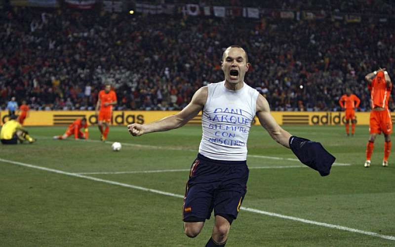
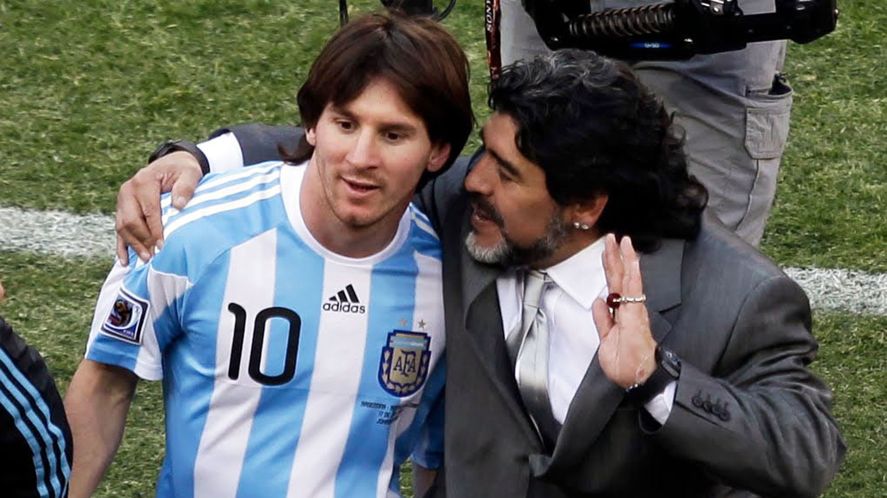

Personajes
Diego Armando Maradona nació en Buenos Aires (Argentina) el 30 de octubre de 1960. Es considerado junto a Pelé, el mejor jugador de la Historia del fútbol. Aunque nació en Lanús, se crio en Villa Fiorito, donde le empezaron a apodar el Pelusa. ... Durante los años siguientes, Maradona fue el máximo goleador de su equipo.
(Andrés Iniesta Luján; Fuentealbilla, Albacete, 1984) Futbolista español. Formado en La Masia azulgrana y vinculado desde sus orígenes al Futbol Club Barcelona, ha sido una de las piezas fundamentales del Barça de Josep Guardiola, vencedor en 14 de las 18 competiciones que disputó durante los cuatro años que ejerció como entrenador (2008-2012). Igual de decisiva ha sido su contribución a los recientes éxitos de la selección española: marcó en la final frente a Holanda el tanto que daba a la Roja el Mundial de Sudáfrica (2010) y fue declarado por la UEFA el mejor jugador de la Eurocopa de 2012, trofeo que España levantó por segunda vez consecutiva, tras haber obtenido también la victoria en la edición de 2008.Andrés y su hermana menor, Maribel, crecieron en el seno de una familia de clase trabajadora. Su padre era albañil y su madre ayudaba al abuelo en el bar que éste regentaba en el pueblo. Siempre jugando al balón, con ocho años sus padres resolvieron inscribirlo en las pruebas de selección para ingresar en las categorías inferiores del Albacete Balompié. Fue allí donde, según cuenta él mismo, dio sus primeros "coletazos más en serio". En 1996, cuando participaba en el Torneo Brunete, llamó la atención de Albert Benaiges, del Futbol Club Barcelona, quien ya debió de ver algo en aquel muchacho de tan sólo doce años, pues no dudó en ficharlo y llevárselo a la Ciudad Condal.
(Cristiano Ronaldo dos Santos Aveiro; Funchal, Madeira, 1985) Futbolista portugués considerado uno de los mejores delanteros del panorama actual. Además de los numerosos títulos y distinciones individuales obtenidos a lo largo de su trayectoria en el Manchester United (2003-2009) y en el Real Madrid (desde 2009), tuvo el honor de ser el futbolista por el que más dinero había pagado nunca un club: en junio de 2009, el traspaso al Real Madrid costó al club blanco 94 millones de euros, hasta ese momento la cifra más alta de la historia.Cristiano Ronaldo nació en un barrio obrero en la isla portuguesa de Madeira, en el seno de una familia de tres hermanos. Desde muy pequeño mostró sus excepcionales aptitudes para el fútbol: a los ocho años jugaba en el equipo de La Andorinha, y a los diez se lo disputaban ya los dos equipos mayores de la isla, el Marítimo y el Clube Desportivo Nacional; el padre del jugador decidió que ingresara en este último. Allí progresó de forma meteórica, y a los 16 años, tras realizar unas prueba, se incorporó al Sporting de Lisboa y se trasladó a vivir a la capital portuguesa.
(Lionel Andrés Messi; Rosario, Santa Fe, 1987) Futbolista argentino. Poseedor de una habilidad técnica excepcional, una endiablada velocidad y una inventiva inagotable, desde que llegó de la mano de sus padres al F.C. Barcelona, con 13 años de edad, realizó una carrera vertiginosa por las diferentes categorías hasta el primer equipo, en el que debutó con apenas 16 años en un partido amistoso ante el Oporto. En 2004, con 17 años, Leo Messi jugó su primer encuentro oficial de la Liga española. Con 18 años le llegó su consagración internacional: formó parte de la selección argentina, campeona en el Mundial Juvenil Sub-20 de Holanda, disputado en 2005.ero su verdadera eclosión se produjo con la llegada de Pep Guardiola al banquillo azulgrana: durante las cuatro temporadas en que el técnico dirigió el equipo (2008-2012), sus estadísticas goleadoras alcanzaron niveles estratosféricos, contribuyendo de forma decisiva a que el Barça viviese la mejor etapa de su historia al hacerse con 14 títulos de los 18 posibles. Considerado unánimemente el mejor futbolista del momento, su talento individual se ha visto reconocido en cinco ocasiones con el Balón de Oro (2009, 2010, 2011, 2012 y 2015).